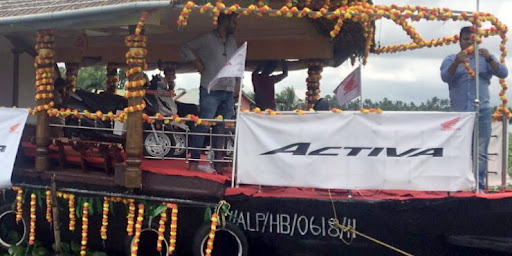
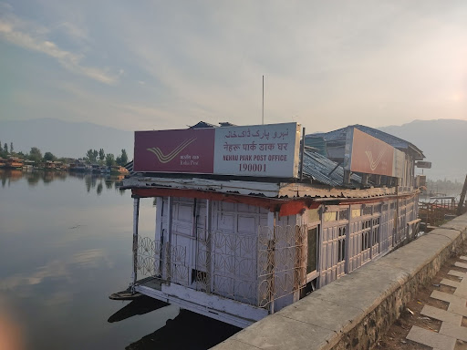

FROM KASHMIR TO KERALA- EMERGENCE OF FLOATING OOH AND AUDIENCE MEASUREMENT
Honda launched first of its type floating Out of Home Advertisement (OOH) in famous Kerala backwaters which caught eyeballs of brands and media agencies across the world. Tourists who visited there for the fun of backwaters also enjoyed this new version of marketing.
Interestingly, marketing idea looks very similar to Indian Post Office in Srinagar’s famous Dal Lake.
Atsushi Ogata, Managing Director, President & CEO, Honda Motorcycle & Scooter India applauded the success of the marketing campaign and said, “We wanted to create an experience for our local audience and narrate a story that would be relatable to them. Through the floating showroom activation, we are delighted that our connection with our consumers has grown stronger. The result achieved so far is a testimony of Honda’s strong customer connect and we are optimistic that this will contribute to building better and prolonged relations with our audience".
Gour Gupta, Managing Director of Tribes Communication which has designed the marketing campaign was equally delighted as he said, “A brand storytelling has to be creative, compelling and engaging. Through the floating showroom activation, we wanted to create an unprecedented experience for the audience. We are glad to have generated a huge impact on the queries from the customers and are optimistic that the momentum will sustain".
Since recovery from Covid has started, brands are again looking forward to OOH for impactful advertisement. OOH is not only offering creative solutions but also offering geo spatial data based methodology where one can also measure the number of audience that visit through the particular site. Sailesh Muthu, CEO of AdMAVIN which is a pioneer in OOH Audience Measurement explains it as “ OTS(Opportunity to See) is the number that we talk about when we say audience measurement. OTS will significantly improve as creative advertisement grabs more eyeballs. It not only improves brand awareness but also helps media sites utilize their full potential".